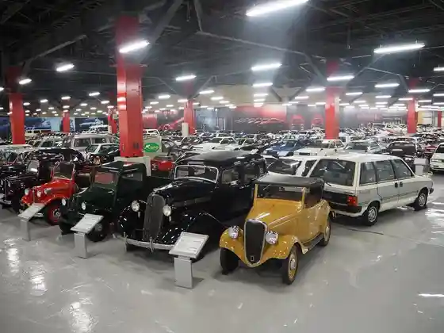
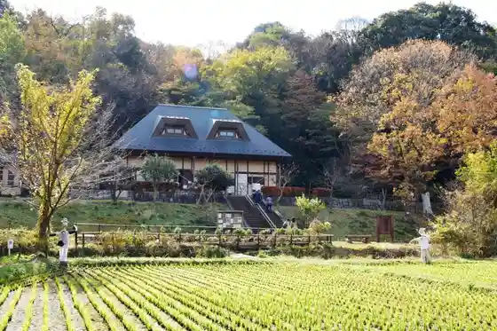
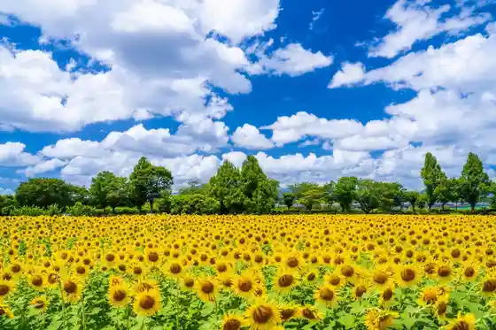
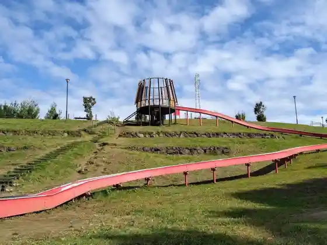

Nissan Heritejikorekushon
Zama, Kanagawa · 046-298-4355 · Official / source link

Prefectural Zama Yatoyama Park
Zama, Kanagawa · 046-257-8388 · Official / source link

Zama Himawari Hatake
Zama, Kanagawa · 046-205-6515 · Official / source link

Serizawa Park
Zama, Kanagawa · 046-252-7221 · Official / source link

Kaniga Sawa Park
Zama, Kanagawa · Official / source link
Suzuka Mei Shrine
Zama, Kanagawa · 046-256-1122 · Official / source link
Zama Shrine
Zama, Kanagawa · 046-251-0245 · Official / source link
Ban Jinzui Park (Yusui)
Zama, Kanagawa · Official / source link
Ryu Gen In Yusui
Zama, Kanagawa · Official / source link
Suzuka no Izumi Yusui
Zama, Kanagawa · Official / source link
Kokoro Iwa Tera Yusui
Zama, Kanagawa · Official / source link
Kami Ido Yusui
Zama, Kanagawa · Official / source link
Zama Yakusho Viewpoint Kairo
Zama, Kanagawa · 046-255-1111 · Official / source link
Kome Dihausu Zama
Zama, Kanagawa · 046-251-1125 · Official / source link
Kome Dihausu Kurihara
Zama, Kanagawa · 046-256-6785 · Official / source link
Zama Park
Zama, Kanagawa · Official / source link
Sagamigaoka Naka Yoshi Komichi
Zama, Kanagawa · Official / source link
Sukaiariina Zama (Shimin Gym)
Zama, Kanagawa · 046-255-0077 · Official / source link
Sukai Green Park
Zama, Kanagawa · 090-2521-4363 · Official / source link
Osaka Dai Park
Zama, Kanagawa · 090-2521-4363 · Official / source link
Togei Experience & Wafukissa Hibari Charyo
Zama, Kanagawa · 046-219-9620 · Official / source link
kitchen&cafe Hakone Forest
Zama, Kanagawa · 046-244-0437 · Official / source link
Okashi Workshop Hibari Kafe
Zama, Kanagawa · 046-207-6704 · Official / source link
Karage Katochan
Zama, Kanagawa · 046-240-0688 · Official / source link
Machi Sukon
Zama, Kanagawa · Official / source link
Noten Yumoto Yu Kai Sokai Zama
Zama, Kanagawa · 046-254-1126 · Official / source link
Zakka to Kissa Fuku Tsuzuri
Zama, Kanagawa · 046-205-3950 · Official / source link
Shizu Baths Sagamihara
Zama, Kanagawa · Official / source link
Zenkoku no Miso
Zama, Kanagawa · 042-767-5350 · Official / source link
Yogashi Mise Poemu
Zama, Kanagawa · 046-255-0330 · Official / source link
Zama Maru Ju Seipan
Zama, Kanagawa · 046-256-0955 · Official / source link
CAFE IMPRESSION
Zama, Kanagawa · 046-204-4785 · Official / source link
Kiku Ho Do Main Shop
Zama, Kanagawa · 046-251-0139 · Official / source link
Arashi Baths Zama
Zama, Kanagawa · 046-257-4114 · Official / source link
Teuchi Chisoba Kakureya Yabu Kyu
Zama, Kanagawa · 046-256-5633 · Official / source link
Ki Ichigo no Ichigo
Zama, Kanagawa · 046-254-7705 · Official / source link
O Konomi Yaki Wa
Zama, Kanagawa · 046-255-3335 · Official / source link
Kissa Land Rii Hoshi no Tani Danchi
Zama, Kanagawa · Official / source link
Miito Plaza Niku no Ishikawa
Zama, Kanagawa · 046-251-4129 · Official / source link
COFFEE NOTE
Zama, Kanagawa · 046-254-2282 · Official / source link
Dryflower shop Lady
Zama, Kanagawa · 090-8044-0451 · Official / source link
Pan Kobo Tsuchiya Zama Tatenodai Mise
Zama, Kanagawa · 070-8535-1908 · Official / source link
Osteria GiGi
Zama, Kanagawa · 050-5484-2437 · Official / source link
GG MISAKI DINING
Zama, Kanagawa · 050-5462-5721 · Official / source link
Ganso Ramen Kinkado Main Shop
Zama, Kanagawa · 046-258-0011 · Official / source link